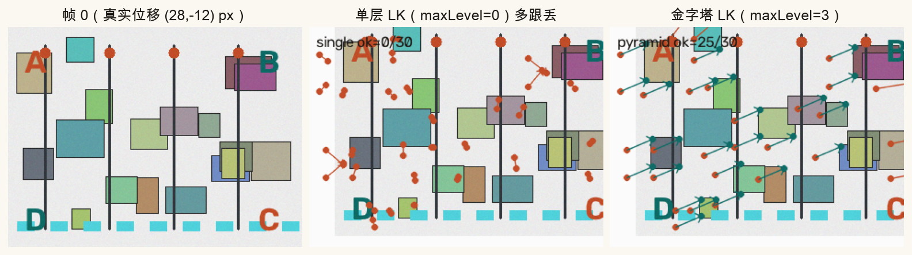
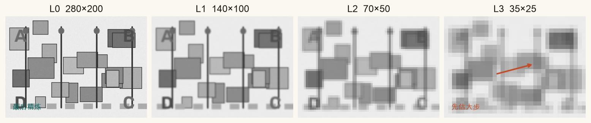
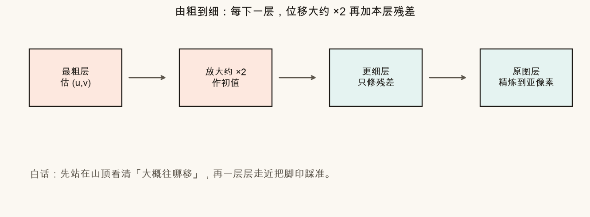
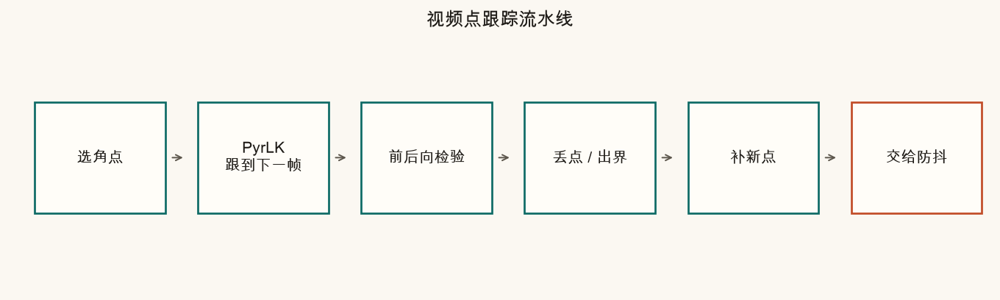
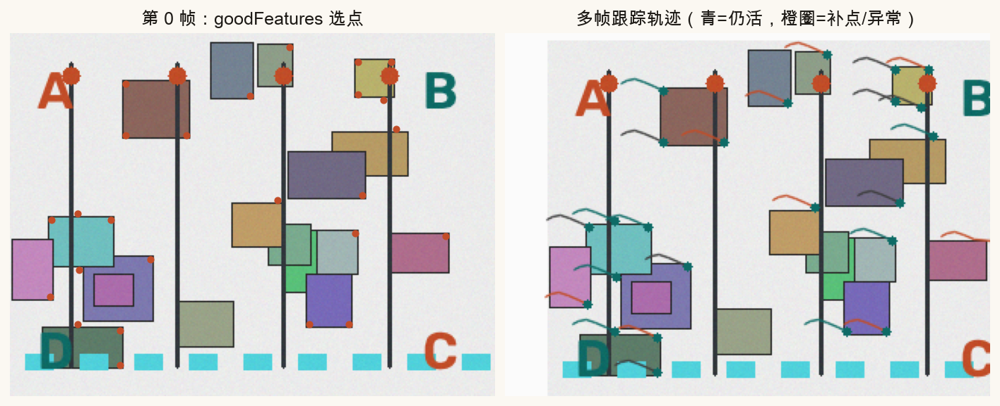
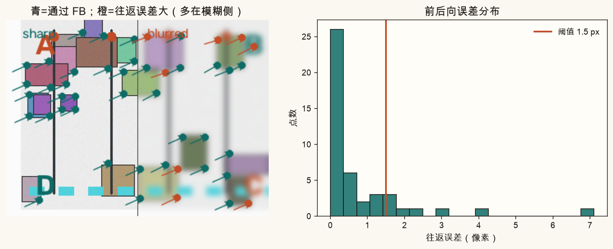
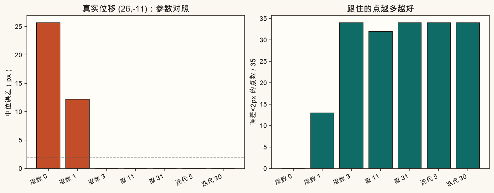
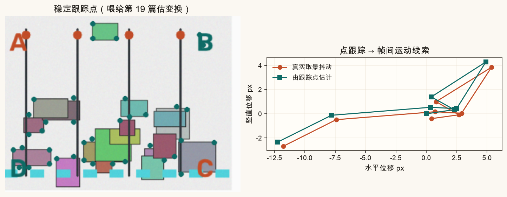

第 16 篇 · 光流重点 · 约 70 分钟
单层 Lucas-Kanade 只能「看见」窗口里那一小步。相机抖狠一点、物体跑快一点，点就跟丢。这一篇用图像金字塔把大位移拆成「先粗后细」；再串成视频里的选点→跟踪→检验→补点流水线，给第 19 篇防抖备好稳定跟踪点。
回想第 15 篇：Lucas-Kanade（LK）在特征点周围开一个小窗口，假设窗口里所有像素「一起平移」了 (u, v)，再用亮度守恒叠成最小二乘求解。
这里藏着一个硬限制：算法几乎只在当前位置附近找答案。窗口大概十几到二十几个像素宽时，真实位移若突然跳到 20～30 像素，灰度「对不上号」，迭代就会卡在错误位置，甚至直接报失败。
生活类比：你盯着一张邮票大小的照片找「同一栋楼」，楼却在下一帧挪出了照片边缘——不是你不努力，是视野太小。

经验口诀：单层 LK 舒服的位移量级，大约是「窗口半径」那么大。要追更大的步子，要么开更大窗口（噪声与运动不一致会变糟），要么上金字塔。
图像金字塔就是同一张图的一组「越来越小、越来越糊」的副本。每上一层，宽高大约减半（OpenCV 的 pyrDown）。

跟踪顺序是由粗到细（coarse-to-fine）：
(u, v)。
为什么模糊反而有用？模糊会抹掉细纹理，剩下大结构。粗层负责「方向别跑反」；细层负责「毫米级对准」。两者分工，才撑得住大位移。
记第 ℓ 层估出的位移为 (uℓ, vℓ)。传到更细一层时：
初值 ≈ 2 · (uℓ, vℓ)
然后在更细层只求残差 (du, dv)，相加得到本层结果。叠完所有层，就是金字塔 LK。
OpenCV 一行搞定（内部已建金字塔并做上述迭代）：
nextPts, status, err = cv2.calcOpticalFlowPyrLK(
prevGray, nextGray, prevPts, None,
winSize=(21, 21), # 每层窗口
maxLevel=3, # 最粗层编号；0=单层
criteria=(cv2.TERM_CRITERIA_EPS | cv2.TERM_CRITERIA_COUNT, 30, 0.01)
)prevPts：上一帧的点，形状常见 (N,1,2)，可用 goodFeaturesToTrack 选出。nextPts：本帧估到的新位置。status[i]==1：第 i 个点被认为跟踪成功（仍要再做前后向检验，见下文）。maxLevel：金字塔最高层。层数 = maxLevel + 1。例如 maxLevel=3 共 4 层。理论容量的粗估（帮助调参，不是硬公式）：
大约能跟住的位移 ∼ (窗口半径) × 2maxLevel
窗口 21、maxLevel=3 时，量级可到几十像素；maxLevel=0 时就只剩窗口半径那一档。
防抖、简易 SLAM、运动分割，很少「只算两帧」。真实做法是把稀疏光流嵌进一条流水线：

goodFeaturesToTrack（Shi-Tomasi）找角点——平坦墙面差点，窗角、文字、杆子更好。calcOpticalFlowPyrLK。status、是否出画、前后向误差（下一节）。
status==1 不等于「一定对」。遮挡、运动模糊、重复纹理时，LK 仍可能给出一个「看起来收敛」的错误位置。
前后向检验（forward-backward check）很朴素：
类比：你指路「往东走 100 米」，对方按你的路走回来却偏了三条街——说明中间某步不可信。

代价：每个点多跑一次反向 LK。点数通常只有几十到几百，这点算力在防抖流水线里通常换得起。
三个旋钮最常拧。脚本用同一组大位移合成帧做了对照：

| 参数 | 偏小会怎样 | 偏大会怎样 | 常用起点 |
|---|---|---|---|
| maxLevel | 追不住大位移 | 过糊、慢一点；极粗层可能几乎没纹理 | 2～3 |
| winSize | 噪声敏感、易跟丢 | 窗口内运动不一致（尤其有深度差） | 15～31（奇数） |
| max 迭代 | 没收敛就停 | 收益递减，白费时间 | 20～30 |
| FB 阈值 | 误杀好点 | 放过坏点 | 0.5～2.0 px |
下面是示意模型（不是真跑 OpenCV）：用「可捕获位移 ≈ 窗口半径 × 2层数」判断点能不能跟上。拖位移，再拧层数和窗口，看绿点/红点如何切换。
点从 A 跟到 B 再跟回。阈值越大，越宽松。观察哪些点被留下。
电子防抖（第 19 篇）需要知道「这一帧相对上一帧抖了多少」。稠密光流太贵、也太吵；工程上常用一撮通过检验的稀疏点估计帧间变换（平移、相似、仿射或单应）。

记住目标：不是「点越多越好」，而是「留下来的点够可信」。前后向检验、出界剔除、必要时 RANSAC（第 7 篇）都会在防抖链路里再次出场。
脚本合成带角点的场景，对比单层/金字塔、画流水线与前后向检验，并写出「改这里」个人图。
在系列根目录（能看见 index.html）执行：
source .venv/bin/activate
MPLCONFIGDIR=/tmp/mpl-cache python code/ch16_pyramid_lk.py成功时终端有「自检通过」，并写出例如：
assets/figures/ch16_large_motion.png、ch16_pyramid_levels.png、ch16_coarse_to_fine.pngch16_track_pipeline.png、ch16_pipeline_steps.png、ch16_forward_backward.pngch16_param_compare.png、ch16_for_stabilization.png、ch16_my_track.pngassets/images/ch16_*.png：OpenCV 叠加箭头的示意打开 code/ch16_pyramid_lk.py 顶部「改这里」。这些参数只影响 ch16_my_track.png；课文对照图仍按固定参数重画。
MY_MAX_LEVEL = 3 改成 0，保持 MY_TRUE_SHIFT = (24, -10)，运行。个人图里通过的点数应明显变少。MY_MAX_LEVEL = 3，把 MY_TRUE_SHIFT 改成 (6, -2)。小位移时单层也够用——可再设 level=0 对比。MY_WIN_SIZE 改成 11 再改成 31，看中位误差与通过点数。MY_FB_THRESH 改成 0.3（很严）再改成 5.0（很松），观察青点数量。先自己答，再展开。
它主要在当前窗口邻域里迭代求解。真实位移超出窗口「视力」时，亮度对不上，容易收敛失败或收敛到错位置。
先在缩小模糊图上估大步方向，再把位移放大约 2 倍当作更细层的初值，逐层只修残差，最后在原图精炼。
0 表示只用原图（单层）。3 表示最高到第 3 层，共 4 层（L0～L3），更能跟大位移。
A→B 得到 p′，再 B→A 得到 p″；若 ‖p−p″‖ 大于阈值，认为该轨迹不可靠并丢弃。
不是。太大则窗口内可能混有不同运动（前景/背景），假设「同一平移」被破坏；太小则噪声敏感。一般从 15～31 试起。
用通过检验的稀疏点估计帧间变换/路径，再反向补偿抖动。点要稳、要可信，而不是越多越好。
下一篇进入稠密光流：每个像素都要 (u, v)。从平滑假设的直觉走到 Farneback，并对照 OpenCV calcOpticalFlowFarneback 的参数。